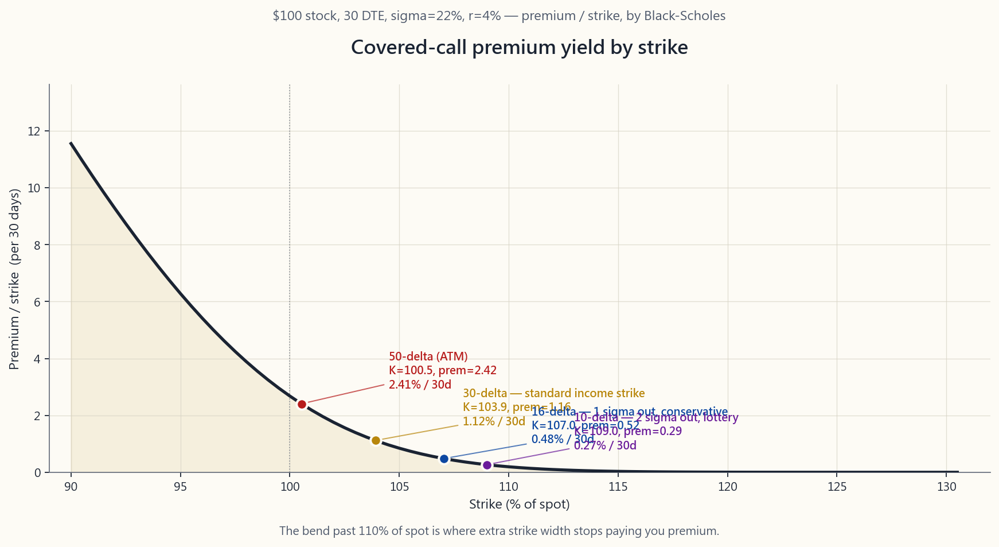
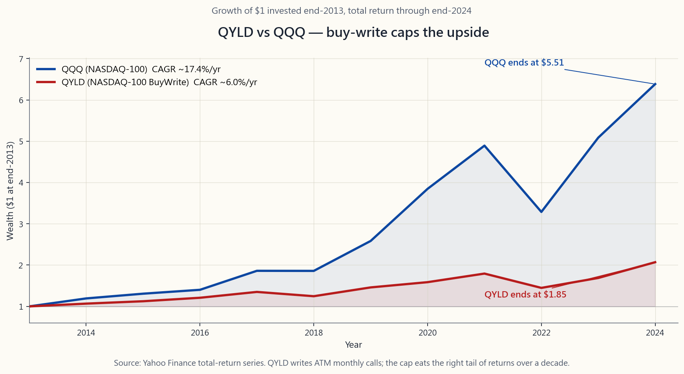

Week 27: Covered Calls Deep Dive — Strike Selection, IV Harvesting, the Wheel
1. Why This Is Important
Week 26 reframed selling a call as a paid limit-sell order. That mental shift is necessary, but it is not sufficient. The investor who actually runs covered calls month after month learns very quickly that the strategy is easy and the parameter selection is everything. Two investors writing covered calls on the same SPY position can produce completely different five-year outcomes depending on how they pick strike, tenor, and when they choose to write. This week is about those choices.
First, strike selection drives the entire payoff profile. A 30-delta call collects roughly three times the premium of a 10-delta call but is also assigned roughly three times as often. Neither is "correct" in isolation. The right choice depends on whether you would genuinely be happy to sell the shares at that strike, and whether the extra premium compensates you for the cap on upside you are agreeing to. Most retail investors anchor on premium yield without thinking about the second leg of that trade, and they get systematically called away in the months they most needed the upside.
Second, tenor is not neutral. Theta — the rate at which extrinsic value decays — is non-linear. A 30-day option does not bleed twice as fast as a 60-day option; it bleeds roughly 1.4 times as fast per day. That non-linearity is why the 30 to 45 days-to-expiration band is the sweet spot for income writers. Shorter than that, premium is too small relative to gamma risk; longer than that, you give back too much theta to hold the position open.
Third, IV-rank tells you when to write and when to wait. Premium is not a free lunch. It is compensation for taking the other side of implied volatility. When IV-rank is high you are being paid richly to sell that volatility. When it is low — fat-and-happy markets, complacent VIX in the low teens — covered-call premium shrinks to almost nothing and the cap on upside is a worse trade. Horace's principle 6 lives here: the tail wags the dog, and IV is the price of the tail.
Fourth, taxes can wipe out the headline yield. A covered-call program in a taxable account converts what could have been long-term capital gains (taxed at ~15-20%) into a stream of premium recognised as short-term capital gains (taxed up to ~37%). For most readers this strategy belongs in an IRA or other tax-advantaged sleeve. The largest unspoken fee in long-only investing is tax, and a high-turnover income overlay is the most tax-inefficient thing you can do in the wrong account.
This lesson teaches the disciplined version of the strategy: how to pick the strike with delta, how to pick the tenor with theta, how to read IV-rank, how to roll, and where covered calls quietly fit inside the barbell.
2. What You Need to Know
2.1 Strike Selection by Delta
Strike picking by price is amateur hour. Strike picking by delta is the institutional standard. Delta has three useful interpretations simultaneously, which is why options desks use it as the universal ruler:
stock moves (over short distances).
call has roughly a 30% chance of expiring ITM. (This is technically risk-neutral probability, not real-world probability, but for short-tenor strikes the difference is small.)
the money. 0.16 delta sits roughly one standard deviation out. 0.025 delta sits roughly two standard deviations out.
That last interpretation is the key one. **0.16 delta is not a magic number — it is 1σ.** A 1σ OTM call has, by construction, about a 16% chance of expiring ITM. That is why "16-delta call" is the conservative income writer's default.
The four standard delta levels for covered-call writers, on a stock at $100 with σ=22% and 30 DTE:
| Delta | Strike (approx) | Premium (approx) | Premium / strike | Annualised | Assignment odds |
|---|---|---|---|---|---|
| 0.50 | $100 | $2.55 | 2.55% | ~31% | ~50% |
| 0.30 | $103-104 | $1.35 | 1.31% | ~16% | ~30% |
| 0.16 | $107 | $0.55 | 0.51% | ~6.2% | ~16% |
| 0.10 | $109-110 | $0.30 | 0.27% | ~3.3% | ~10% |
The bend in that table is where this lesson lives. Going from 0.10 to 0.16 delta nearly doubles the premium, but only adds 6 percentage points of assignment risk. Going from 0.30 to 0.50 delta only doubles the premium again but adds another 20 points of assignment risk. **The 30-delta call is the standard income strike** because it sits at the favourable bend of that curve. The 16-delta call is the conservative default for a writer who genuinely does not want to part with the shares.

The image renders the full curve for a $100 stock at σ=22%, 30 DTE. Notice how flat the curve becomes past 110% of spot — once you push beyond 1σ OTM you are working very hard for tiny premium.
2.2 Tenor — Why 30 to 45 DTE
Theta is the hidden engine of every short-premium strategy. A short option's value decays roughly with the square root of time-to-expiry, which means a 30-day option carries about 70% as much extrinsic value as a 60-day option. The implication: by writing 30-day calls and rolling monthly, you collect roughly 1.4 times the annualised premium that you would by writing 60-day calls and rolling bi-monthly, even though the headline premium per contract is smaller.
But you cannot push that logic to weekly options without paying for it. Weekly calls have huge gamma — a small move in the stock will double or triple the option's delta in a day, which means a stock that briefly pierces your strike on Wednesday and then closes back below it on Friday can still leave you assigned. The mechanical sweet spot, agreed on by both BXM index methodology and most income desks I have spoken to, is 30 to 45 days to expiration.
Within that band the two reasonable defaults are:
- Monthly cycle (28-35 DTE). Write the next monthly expiry on
- 45 DTE rolling. Write 45 DTE, roll out at 21 DTE. About nine
Both are defensible. Pick one and stay disciplined.
2.3 IV-Rank — When to Write and When to Wait
IV-rank measures where current implied volatility sits inside the trailing 52-week range. IV-rank of 50 means current IV is exactly at the median; IV-rank of 90 means current IV is near the high; IV-rank of 10 means current IV is near the low.
The rule is cleaner than most people realise. **Sell premium when IV-rank is above 30. Wait when it is below.** Premium is compensation for taking the other side of vol. When vol is cheap (IV-rank low), you are accepting the cap on upside for almost nothing. When vol is rich (IV-rank high), you are being paid richly for the same cap.
A practical implication: covered-call yield on SPY in calm 2017 was about 4% annualised. The same overlay in late-2022, with VIX in the high 20s, was paying about 14% annualised. Same strikes, same deltas, completely different trades. Investors who blindly write every month ignoring IV-rank are mechanically harvesting a worse edge than the one they think they have.
This is the practical version of "the tail wags the dog": the tail (IV) is the dog. Watch the IV-rank, not the stock price. The covered-call writer who ignores IV-rank is the equivalent of the value investor who ignores price — they are placing the same trade regardless of what the market is offering them.
2.4 Rolling — The Two Rules
When the stock approaches your strike, you have three choices: take assignment, buy the call back, or roll. Rolling is buying the current call back and simultaneously writing a new one further out in time and possibly further out in strike. Done well, rolling lets you maintain the position without realising the gain on the underlying shares (relevant for tax planning — you want to preserve the long-term-capital-gains treatment on the equity leg).
**Rule 1: When the call is ITM and you do not want to be assigned, roll up and out.** Buy back the current ITM strike, sell a higher strike further out in time. This usually requires the new tenor to be at least one cycle longer (e.g., a 30-day ITM rolled to a 60-day strike one or two strikes higher) to roll for a credit, not a debit. If you cannot roll for a credit, accept assignment instead — paying to defend a covered call is almost always a worse trade than being called away at your original strike.
**Rule 2: When the stock has fallen significantly and the call is deep OTM, roll down and out.** Buy the current near-worthless call back for a few cents, sell a lower strike further out. This locks in most of the original premium and resets the position to collect fresh premium against the now-lower stock. This is also the move that makes covered calls work in flat-to-down markets — you keep re-striking lower as the stock drifts.
The third option — rolling out only, same strike — is rarely the right move. If the call is ATM or close to it, rolling same-strike just defers the assignment decision by 30 days, usually for a tiny credit. Better to either accept assignment (your shares were going to get called anyway) or roll up-and-out for genuine breathing room.
2.5 Tax Treatment and Account Choice
Premium received from selling calls is treated as short-term capital gain in U.S. taxable accounts unless the contract is held open for more than a year — which essentially never happens with 30-45 DTE writing. For a top-bracket investor the federal rate is 37% plus state, versus the 20% (plus 3.8% NIIT) long-term cap gains rate the underlying shares would earn if simply held. That is roughly half the headline premium gone to taxes.
There are also the assignment mechanics to worry about. If your shares are called away, the gain on the equity leg is realised according to the holding period of those shares, not the option. If the shares had a long-term holding period you keep LTCG treatment on the equity gain. The premium itself, however, is still STCG.
There is a further trap: a covered call written on a stock you have held less than one year can suspend the holding-period clock under the IRS "qualified-covered-call" rules if the strike is too far ITM. The mechanical fix is to write only OTM calls on shares you have not yet held for a year.
The clean solution is the tax-account anchor: **run the covered-call program in an IRA or 401(k), not in a taxable account.** All premium is tax-deferred (or tax-free in a Roth), assignments do not generate taxable events, and the entire strategic flexibility — rolling, re-striking, accepting assignment — is freely available without tax friction. For a taxable account, the calculus tilts much harder toward simply holding the shares and harvesting LTCG over multiple years.
2.6 Buy-Write ETFs vs. DIY — Why QYLD Underperforms QQQ
The biggest covered-call ETFs in the U.S. are QYLD (Global X NASDAQ 100 BuyWrite, ~$8B AUM) and JEPI (JPM Equity Premium Income, ~$33B AUM). They sell the strategy as "high yield with downside cushion." The yield is real — QYLD distributes about 11-12% per year. The problem is the ETF mechanics quietly destroy the upside.
QYLD writes at-the-money calls every month on the entire NASDAQ 100 portfolio. ATM means delta ~0.50 — the strategy caps almost the full upside in any given month. Over 2014-2024 that produced roughly 6%/yr total return for QYLD versus roughly 17%/yr for plain QQQ. The investor in QYLD received their headline yield, and the fund's NAV slowly bled lower over a decade as the math compounded. QYLD's NAV in 2014 was about $25; in early 2026 it is about $17.

JEPI is structurally less aggressive — it writes equity-linked notes that approximate selling 5-10% OTM calls on the S&P 500 — so the upside cap is gentler. Its 11-year arc has been about 9-10%/yr versus SPY's roughly 13%/yr, with materially lower drawdown. JEPI is a defensible product for a retiree wanting a smoother ride; QYLD is, in my opinion, a structurally bad product wearing a high-yield hat.
The point of running the strategy yourself is precisely that **you control the strike and the tenor.** The buy-write ETFs use a fixed mechanical rule because they have to — they are managing billions of dollars of someone else's money and cannot pause writing in low-IV-rank months. You can. That optionality is the entire reason DIY covered calls beat the buy-write ETFs over a long horizon.
2.7 The Wheel — Preview of Week 30
Here is the strategy that ties Weeks 26, 27, and 28 together. It is called "the wheel," and Week 30 will dedicate a full lesson to it.
against them every month until called away.
back to step 2.
The wheel is the institutional version of what value investors have always done by hand: buy below intrinsic value, sell above. The options just pay you to wait at both ends. On a stock you genuinely want to own at $90 and sell at $115, the wheel can produce 12-18% annualised yield purely from premium, plus the equity P&L on the intervening price movement. That is the destination Weeks 25-30 are quietly walking toward.
The covered-call leg of the wheel is exactly the strategy this lesson teaches. Master it here, master cash-secured puts in Week 28, and Week 30 is just the assembly instructions.
2.8 A Worked Example, End to End
You own 100 shares of SPY at $480, current price $510. IV-rank is 45, which is fine — not rich, not cheap.
- Strike choice. SPY 30-delta call, 30 DTE, is the $522 strike.
- What you have agreed to. If SPY closes above $522 in 30 days,
- What happens if SPY stays below $522. You keep the $580 in
- What happens if SPY rallies hard to $545 in two weeks. Your
- What happens if SPY drops to $470. Your call goes near-zero.
That is the whole strategy. The interactive at the end of the lesson lets you spin all of these knobs.
3. Common Misconceptions
strike for an income-focused writer with no strong directional view. If you would be unhappy to part with the shares, write 16- delta. If you bought the stock specifically to write calls against it and would happily sell at the strike, write 50-delta. Strike is not universal.
write weeklies."** They give the highest theta-per-day, but they also give the highest gamma. Realised assignment risk and slippage on weeklies is far worse than on monthlies. Most retail backtests that show "weeklies dominate" ignore execution costs and gamma blow-ups.
premium you collect cushions about 1-2% of decline. In a 20% drawdown, your shares lose 18% net. Buying a put would protect you. Writing a call is income, not insurance. Stop conflating the two.
It is not real total return. Total return for QYLD is ~6%/yr; the distribution is partly funded by NAV erosion. Read the total return chart, not the yield headline.
No. If you cannot roll for a credit, taking assignment is strictly better than paying to defend a position. Sometimes the right answer is to let the shares get called away.
in strong rallies (the cap on upside dominates the premium collected) and break even or slightly outperform in flat and mildly down markets. They do not save you in a hard bear market.
risk and capped upside. The upside foregone in good months funds the premium you keep in flat months. There is no free lunch.
anyway."** You cannot, if you care about expected return. Skipping the bottom-quintile IV-rank months historically improves the strategy's Sharpe by about 25%.
the same strategy, just with the buying decision (cash-secured put) bolted onto the front. Master one, you have nearly mastered the other.
4. Q&A Section
Q: How do I find delta on my broker's screen? A: Most retail platforms (Fidelity, Schwab, IBKR, ThinkOrSwim) show delta as a column in the option chain when you switch the chain view to "Greeks" or "Analytics." If you do not see it, the chain is showing only price columns — change the view. Robinhood and Webull both expose delta on the option detail page.
Q: What if my stock pays a dividend during the option's life? A: The option market prices in expected dividends already, so the strike yield you see in the chain is after the expected dividend ex-date drop. If the dividend is unexpectedly raised, your call may be exercised early the day before ex-dividend — this is the only common early-exercise scenario for American calls. Watch for it.
Q: Can I write covered calls on ETFs? A: Yes, and for most retail income writers the right vehicles are SPY, QQQ, and IWM. Single-name covered calls add idiosyncratic risk without enough premium pickup to justify it for most readers.
Q: How much capital do I need to start? A: One contract = 100 shares. At SPY $510, that is $51,000 of shares. At QQQ $440, that is $44,000. IWM is the cheapest of the three at about $22,000 per contract. If your account is smaller than that, the closest substitute is the XSP (mini-SPX) options, which are 1/10 the size of SPX.
Q: What if I do not own 100 shares — can I still write a call? A: Not as a covered call. Without the shares it is a naked call, which has theoretically unlimited risk and requires margin. Most brokers will not let retail accounts write naked calls. Buy 100 shares first, or use a vertical call spread (Week 29) to construct a defined-risk equivalent.
Q: Should I close winners early? A: Industry rule of thumb: close at 50% of max profit. If you sold a call for $2.00 and you can buy it back for $1.00, you have captured half the premium with much less than half the time elapsed (theta accelerates near expiry). Closing early frees the shares to write a new call sooner and removes the gamma risk of holding the short option into expiration week.
Q: Does this work on cheap stocks? A: Mechanically yes, but the premium is usually too small to be worth the effort. A $20 stock writing a 30-delta monthly call might yield $0.20-0.30. After commissions and bid-ask, the realised yield is barely there. Stick to underlyings above $80-100 per share.
Q: How does this fit the barbell? A: Covered calls live on the passive-equity end of the barbell, not the speculative end. They convert long equity exposure into slightly-less-equity-with-income — they do not replace the speculative-options sleeve. If you write covered calls on your SPY holding, that SPY position is doing what it always did, just with an income overlay.
Q: Why not just buy QYLD or JEPI? A: If you genuinely have no time to manage the strategy, JEPI is a reasonable buy. QYLD is not, because the at-the-money strike rule caps too much upside. DIY beats both because you can flex strike and tenor with IV-rank, which neither ETF can do.
Q: What is the worst-case scenario? A: A V-shaped recovery where the stock crashes 30% then rallies 50%. Your covered calls did not protect you on the way down (premium covers maybe 2% of the 30% drop) and the new lower-strike calls you wrote on the way back up cap your recovery at 10-15%. You lock in losses while giving away the recovery. This is exactly what happened to QYLD investors in 2020-2021 and is the strongest argument for the IV-rank gating rule from §2.3.
Q: How much does this lesson assume from Week 26? A: It assumes you accept that selling a call is a paid limit-sell order. Re-read Week 26 if that framing has not internalised. This lesson is the parameter-tuning layer on top of that mental model.
第27週：備兌認購期權深度剖析——行使價選擇、引伸波幅收割與滾輪策略
1. 為何這至關重要
第26週將沽出認購期權重新定義為「有薪限價賣盤」。這種思維轉變是必要的，但並不足夠。真正月復一月執行備兌認購期權的投資者會很快發現，這個策略本身很簡單，而參數選擇才是一切。兩位投資者在同一個SPY倉位上沽出備兌認購期權，若他們在行使價、期限及沽出時機的選擇上有所不同，五年後的結果可能截然各異。本週的重點正在於此。
首先，行使價決定整個損益結構。 30 delta的認購期權所收取的期權金大約是10 delta期權的三倍，但被行使的機率也大約是三倍。兩者本身都沒有「對錯」之分。正確的選擇取決於你是否真的樂意以該行使價出售股份，以及額外的期權金是否足以補償你所放棄的上行潛力。大多數散戶投資者只盯著期權金收益率，而忽略了這筆交易的另一面，結果偏偏在最需要享受上行回報的月份，股份被悉數行使走。
其次，期限並非中性因素。 時間值衰減（Theta）——即期權外在價值的衰減速率——是非線性的。一張30天期的期權並不會以60天期期權兩倍的速度衰減；實際上每天的衰減速度約為1.4倍。這種非線性正是30至45天到期日是收息沽出者「甜蜜區間」的原因。比這更短，相對於gamma風險而言期權金太少；比這更長，持倉期間放棄給對方的Theta又太多。
第三，引伸波幅排名（IV-rank）告訴你何時沽出、何時等待。 期權金並非免費午餐，它是承擔引伸波幅另一面的補償。當IV-rank高企，你能以豐厚報酬沽出波動性。當IV-rank低企——市場自滿、波動率指數低至十幾——備兌認購期權的期權金幾乎縮水至無，而放棄上行潛力的代價卻毫不遜色。陳馬的第六原則正在於此：尾巴搖狗，而引伸波幅就是那條尾巴的價格。
第四，稅務可能蠶食表面收益率。 在應稅帳戶中執行備兌認購期權策略，可能會將原本屬於長期資本增值（稅率約15-20%）的回報，轉化為以短期資本增值（稅率最高約37%）徵稅的期權金收入。對大多數讀者而言，此策略應置於個人退休帳戶（IRA）或其他稅務優惠帳戶中運作。長期投資中最大的隱性費用是稅，而在錯誤帳戶中執行高換手率的收息覆蓋策略，是你所能做到的最低稅務效率之事。
本課將教授這套策略的紀律版本：如何用 delta 挑選行使價、如何用 theta 選擇期限、如何解讀 IV-rank、如何展期，以及備兌認購期權在槓鈴策略中的定位。
2. 你需要掌握的知識
2.1 以 Delta 選擇行使價
按價格挑選行使價是業餘做法，按delta挑選才是機構標準。Delta同時具備三種實用的解讀方式，這正是期權交易部門將其視為通用標尺的原因：
最後一種解讀最為關鍵。0.16 delta並非神奇數字——它代表1σ。 一個1σ價外的認購期權，按構造而言，到期時落於價內的機率約為16%。這正是「16 delta認購期權」成為保守型收息沽出者預設選擇的原因。
以下是一個股價100美元、σ=22%、30天到期日的股票，備兌認購期權沽出者的四個標準delta水平：
| Delta | 行使價（約） | 期權金（約） | 期權金／行使價 | 年化收益 | 被行使機率 |
|---|---|---|---|---|---|
| 0.50 | $100 | $2.55 | 2.55% | 約31% | 約50% |
| 0.30 | $103-104 | $1.35 | 1.31% | 約16% | 約30% |
| 0.16 | $107 | $0.55 | 0.51% | 約6.2% | 約16% |
| 0.10 | $109-110 | $0.30 | 0.27% | 約3.3% | 約10% |
這張表格中的轉折點，正是本課的核心所在。從0.10上升至0.16 delta，期權金幾乎翻倍，但被行使風險僅增加6個百分點。從0.30上升至0.50 delta，期權金再度翻倍，但被行使風險卻額外增加20個百分點。30 delta認購期權是標準收息行使價，因為它位於該曲線的有利轉折點。16 delta認購期權則是真正不想出售股份的沽出者的保守預設選擇。
上圖展示了一隻股價100美元、σ=22%、30天到期日的股票的完整曲線。留意曲線在現貨價格110%以上如何趨於平坦——一旦超過1σ價外，你便是以大量努力換取微薄期權金。
2.2 期限——為何選擇30至45天到期日
Theta是每個沽出期權金策略的隱藏引擎。短期期權的價值大致按到期時間的平方根衰減，意味著30天期期權所含外在價值約為60天期期權的70%。推論如下：通過每月沽出30天期認購期權並按月展期，即使每張合約的表面期權金較小，所收取的年化期權金也約比沽出60天期期權並每兩個月展期高出約1.4倍。
然而，你不能將這個邏輯推至週期期權而不付出代價。週期期權具有巨大的gamma——股票的小幅波動可在一天內令期權的delta翻倍甚至三倍，這意味著股票在週三短暫突破你的行使價、週五收回，仍可能令你被行使。無論是BXM指數的方法論，還是我與多個收息交易部門的交流，大家認同的機械甜蜜點均為30至45天到期日。
在這個區間內，兩個合理的預設選擇為：
- 月度週期（28至35天到期日）。 在到期週五沽出下一個月度到期日的期權。每年十二次。與大多數個股的月度業績日曆吻合。
- 45天到期日滾動。 沽出45天到期日，於21天到期日時展期。每年約九次，每次被行使風險略低，但年化期權金也略少。
2.3 IV-rank——何時沽出、何時等待
IV-rank衡量當前引伸波幅在過去52週範圍內所處的位置。IV-rank為50，表示當前引伸波幅恰好處於中位數；IV-rank為90，表示接近高位；IV-rank為10，表示接近低位。
規則比大多數人想象的更清晰。當IV-rank高於30時沽出期權金；低於30時等待。 期權金是承擔波動性另一面的補償。當波動性便宜（IV-rank低），你為幾乎沒有價值的上行上限買單；當波動性高企（IV-rank高），你因承擔同樣的上行上限而獲得豐厚報酬。
一個實際含義：2017年平靜市場中SPY的備兌認購期權年化收益率約為4%；而在2022年底，波動率指數高達20多，同一策略的年化收益率約為14%。行使價相同、delta相同，卻是截然不同的交易。無視IV-rank、每月機械沽出的投資者，所收割的優勢比他們自以為的更差。
這是「尾巴搖狗」的實踐版本：尾巴（引伸波幅）就是那條狗。盯緊IV-rank，而非股票價格。忽視IV-rank的備兌認購期權沽出者，就如同忽視價格的價值投資者——無論市場提供什麼條件，他們都在做同一筆交易。
2.4 展期——兩條規則
當股票接近你的行使價時，你有三個選擇：接受行使、買回認購期權，或展期。展期是指買回當前認購期權，同時沽出一張期限更長、行使價可能更高的新期權。做得好的話，展期讓你在不實現標的股份收益的情況下維持倉位（與稅務規劃相關——你希望保留股票部分的長期資本增值處理）。
規則一：當認購期權處於價內而你不希望被行使時，向上並向外展期。 買回當前的價內行使價，沽出期限更長的更高行使價。通常需要新期限至少比當前長一個週期（例如，將30天價內期權展至更高行使價的60天期權），才能以收取期權金而非支付期權金的方式展期。若無法以收取期權金的方式展期，則接受行使——付錢捍衛備兌認購期權幾乎總是比以原有行使價被行使更差的交易。
規則二：當股票大幅下跌、認購期權深度價外時，向下並向外展期。 以幾分錢買回當前接近毫無價值的認購期權，沽出期限更長的更低行使價。這鎖定了原有期權金的大部分，並重置倉位以收取新的期權金。這也是備兌認購期權在平淡至下行市場中發揮作用的操作——隨著股票下漂，你不斷將行使價下調。
第三個選項——僅向外展期、維持相同行使價——很少是正確的選擇。若認購期權處於等價或接近等價，延伸相同行使價只是將行使決定推遲30天，通常只換取微薄的期權金收入。更好的做法是接受行使（股份反正都會被行使）或向上並向外展期以獲得真正的喘息空間。
2.5 稅務處理與帳戶選擇
在美國應稅帳戶中，沽出認購期權所收取的期權金被視為短期資本增值，除非合約持倉超過一年——而在30至45天到期日的沽出策略中，這幾乎從不發生。對頂稅階投資者而言，聯邦稅率為37%加上州稅，而標的股份若單純持有所獲得的長期資本增值稅率為20%（加上3.8%的淨投資收益稅）。這意味著粗略而言，表面期權金的一半流向了稅務。
此外還需注意行使機制。若股份被行使走，股票部分的收益根據該批股份的持有期間確認，而非期權的持有期間。若股份已達長期持有期間，股票增值部分仍享有長期資本增值待遇。然而，期權金本身仍為短期資本增值。
還有一個陷阱：根據美國稅局的「合格備兌認購期權」規則，若行使價過深入價內，在持倉不足一年的股票上沽出的備兌認購期權，可能會暫停持有期間計時器。機械解決方案是：對於持倉未滿一年的股份，只沽出價外認購期權。
簡潔的解決方案是稅務帳戶錨定：在IRA或401(k)中執行備兌認購期權策略，而非在應稅帳戶中。 所有期權金均遞延納稅（或在羅斯帳戶中免稅），行使不產生應稅事件，整個策略靈活性——展期、調整行使價、接受行使——均可自由運用而無需承擔稅務摩擦。對於應稅帳戶，天平更傾向於單純持有股份，並在多年後收割長期資本增值。
2.6 買入沽出型交易所買賣基金與自主管理——為何QYLD跑輸QQQ
美國最大的備兌認購期權交易所買賣基金包括QYLD（Global X NASDAQ 100 BuyWrite，規模約80億美元）和JEPI（JPMorgan Equity Premium Income，規模約330億美元）。它們將這個策略推銷為「高收益兼備下行緩衝」。收益率是真實的——QYLD每年派息約11-12%。問題在於交易所買賣基金的機制悄然侵蝕了上行潛力。
QYLD每月在整個NASDAQ 100投資組合上沽出等價認購期權。等價意味著delta約0.50——每個月，策略幾乎封頂了全部上行潛力。在2014年至2024年間，QYLD年化總回報約為6%，而簡單持有QQQ的年化回報約為17%。QYLD的投資者收到了表面收益率，而基金的資產淨值在十年間由於數學效應的複利作用而緩緩下滑。QYLD的資產淨值在2014年約為25美元；2026年初約為17美元。
JEPI的結構侵略性較低——它使用類似在標普500指數上沽出5至10%價外認購期權的股票掛鈎票據——因此上行上限較為溫和。過去十一年的年化回報約為9-10%，而標普500交易所買賣基金約為13%，但回撤明顯較小。對於希望平穩運作的退休人士而言，JEPI是合理的產品；QYLD在我看來是一個披著高收益外衣的結構性劣質產品。
自主執行策略的意義，正在於你掌控行使價和期限。買入沽出型交易所買賣基金必須使用固定的機械規則，因為它們管理的是數十億美元的他人資金，無法在IV-rank低迷的月份暫停沽出。你可以。這種靈活性正是自主操作的備兌認購期權長期跑贏買入沽出型交易所買賣基金的全部原因。
2.7 滾輪策略——第30週預覽
以下是將第26、27、28週串聯起來的策略，稱為「滾輪策略」，第30週將為此專設一課詳細講解。
滾輪策略是價值投資者一直以手工方式操作的機構版本：低於內在價值買入，高於內在價值賣出。期權只是讓你在兩端等待時都獲得報酬。對於一隻你真心希望以90美元買入、以115美元賣出的股票，滾輪策略純粹從期權金即可產生12-18%的年化收益，加上期間的股票損益。這是第25至30週正在悄然引導的目的地。
備兌認購期權是滾輪策略的其中一條腿，正是本課所教授的策略。在此掌握它，在第28週掌握現金擔保認沽期權，第30週便只是組裝說明書。
2.8 完整示例，由頭到尾
你持有100股SPY，成本為480美元，當前價格510美元。IV-rank為45——尚可接受，不算豐厚也不算偏低。
- 行使價選擇。 SPY 30 delta認購期權，30天到期日，為522美元行使價。期權金約5.80美元。收益率 = 5.80 / 522 = 30天內1.11% = 年化約13.5%。
- 你所同意的條款。 若SPY在30天後收於522美元以上，你的股份以522美元被行使走。加上5.80美元期權金，有效售出價為527.80美元。相對於480美元成本，這是+9.96%的收益——一個你樂意接受的結果。
- 若SPY維持在522美元以下。 你保留580美元期權金，並對同一批股份沽出新一張30天期認購期權。每年十二次 × 1.11% = 年化期權金收益約13%，疊加在SPY正常的股價升幅和股息之上。
- 若SPY在兩週內急升至545美元。 你的認購期權現已深度價內，距到期尚有約14天。你向上並向外展期至下個月的540美元行使價，收取少量期權金。你放棄了522至540美元之間的升幅（約3.4%的上行潛力），但保持倉位開放並避免了被行使。
- 若SPY下跌至470美元。 你的認購期權接近毫無價值。你以0.20美元買回，鎖定5.60美元的已實現期權金，並在下個月對你的股份以485美元行使價沽出新的認購期權。你現在正對較低的股票收取新的期權金，這正是該策略所標榜的緩衝作用。
3. 常見誤解
4. 問答環節
問：如何在經紀平台的介面上找到delta？ 答：大多數散戶平台（富達、嘉信理財、盈透證券、ThinkOrSwim）在期權鏈介面切換至「希臘字母」或「分析」視圖時，均以列的形式顯示delta。若找不到，說明當前鏈只顯示價格欄——請切換視圖。Robinhood和Webull均在期權詳情頁面顯示delta。
問：若期權存續期間股票派發股息，該如何處理？ 答：期權市場已將預期股息計入定價，因此你在鏈上看到的行使價收益率是計入預期除息日下跌後的數值。若股息意外上調，你的認購期權可能在除息日前一天被提前行使——這是美式認購期權唯一常見的提前行使情形。請留意此點。
問：我可以在交易所買賣基金上沽出備兌認購期權嗎？ 答：可以。對大多數散戶收息沽出者而言，合適的標的為SPY、QQQ和IWM。單一個股的備兌認購期權增添了個別風險，但對大多數讀者而言，額外的期權金收益並不足以彌補。
問：需要多少資本才能開始？ 答：一張合約 = 100股。SPY在510美元，即需51,000美元的股份。QQQ在440美元，即需44,000美元。IWM在三者中最便宜，每張合約約需22,000美元。若帳戶金額較小，最接近的替代品是XSP（迷你標普500指數）期權，規模為SPX的十分之一。
問：若我沒有100股，仍然可以沽出認購期權嗎？ 答：不能以備兌認購期權的形式。沒有股份作為備兌，這將成為裸賣認購期權，理論上承擔無限風險，且需要保證金帳戶。大多數經紀不允許散戶帳戶進行裸賣認購期權。請先購入100股，或使用垂直價差（第29週）構建同等的有限風險替代策略。
問：我應該提前平倉盈利頭寸嗎？ 答：業界經驗法則：於最大利潤50%時平倉。若你以2.00美元沽出認購期權，能以1.00美元買回，即表示你已收取一半期權金，而所用時間遠少於一半（Theta在到期日附近加速衰減）。提前平倉讓股份可更早沽出新的認購期權，並消除在到期週持有短期期權的gamma風險。
問：這適用於低價股嗎？ 答：機械上可行，但期權金通常太少而不值得。一隻20美元的股票沽出30 delta月度認購期權，期權金可能只有0.20至0.30美元。扣除佣金和買賣差價後，實際收益幾乎微乎其微。請選擇每股80至100美元以上的標的。
問：這與槓鈴策略如何配合？ 答：備兌認購期權屬於槓鈴策略的被動股票一端，而非投機端。它將長期股票持倉轉化為「略少股票敞口+收息」——並不取代投機期權倉位。若你對SPY持倉沽出備兌認購期權，該SPY倉位仍在發揮原有作用，只是加上了一個收息覆蓋層。
問：為何不直接買QYLD或JEPI？ 答：若你真的沒有時間管理策略，JEPI是合理的選擇。QYLD則不然，因為其等價行使價規則封頂了過多的上行潛力。自主操作優於兩者，因為你可以根據IV-rank靈活調整行使價和期限，而這兩個交易所買賣基金均無法做到。
問：最壞的情況是什麼？ 答：V型反彈——股票先跌30%後升50%。你的備兌認購期權在下跌途中無法保護你（期權金只能緩衝30%跌幅中的約2%），而你在回升途中以更低行使價沽出的新認購期權，將你的回報上限封頂在10-15%。你在鎖定虧損的同時，也放棄了反彈收益。這正是QYLD投資者在2020至2021年間所經歷的情況，也是IV-rank篩選規則（見第2.3節）最有力的論據。
問：本課對第26週的內容假設了多少前提？ 答：本課假設你接受沽出認購期權即是有薪限價賣盤的概念。若這個框架尚未內化，請重讀第26週。本課是建立在這個思維模型上的參數調整層。
第27週：掩護性買權深度解析——履約價選擇、隱含波動率收割與滾輪策略
1. 為什麼這很重要
第26週將賣出買權重新定義為一種「有償限價賣單」。這種思維轉換是必要的，但光靠它還不夠。真正每個月執行掩護性買權的投資人很快就會發現：這個策略本身很簡單，但參數選擇才是一切。兩位投資人在同一個SPY部位上操作掩護性買權，可能因為履約價、到期日和進場時機的選擇不同，而在五年後產生截然不同的結果。本週要討論的，正是這些選擇。
首先，履約價決定了整個損益結構。 30-delta的買權所收到的權利金大約是10-delta買權的三倍，但被履約的機率也大約高出三倍。沒有哪一種選擇在單獨看來是「正確的」。正確的選擇取決於：你是否真心樂意以那個履約價賣出股份，以及額外的權利金是否足以補償你所接受的上漲空間上限。大多數散戶投資人只盯著權利金殖利率，而忽略了這筆交易的另一面——結果在最需要上漲收益的那幾個月，股份被系統性地以履約價賣出。
其次，到期日的選擇並非中性的。 時間價值衰減（Theta）——即外含價值隨時間流逝而消散的速度——是非線性的。一個30天到期的選擇權並不比60天到期的選擇權每天衰減快一倍；它大約每天快1.4倍。這種非線性正是為什麼距到期日30至45天的區間，是以收入為目標的賣方的最佳甜蜜點。比這更短，相對於gamma風險而言權利金太小；比這更長，持有部位的時間成本又會吃掉太多Theta。
第三，隱含波動率排名（IV-Rank）告訴你何時該賣、何時該等。 權利金不是免費的午餐。它是接受隱含波動率另一方所獲得的補償。當IV-Rank偏高時，你因賣出波動率而獲得豐厚的報酬。當IV-Rank偏低時——市場一片祥和、波動率指數在低十幾的水準——掩護性買權的權利金幾乎縮水到微不足道，而你所放棄的上漲空間卻是個更糟的交易。陳馬的第六個原則就在這裡體現：尾巴搖擺整條狗，而隱含波動率就是尾巴的價格。
第四，稅務可能吞噬掉帳面上的殖利率。 在應稅帳戶中執行掩護性買權策略，會把原本可能是長期資本利得（稅率約15-20%）的收益，轉變為以短期資本利得（稅率最高約37%）課稅的權利金收入。對大多數讀者來說，這個策略應該放在IRA或其他稅務優惠帳戶中執行。長期持有投資最大的隱藏成本是稅，而在錯誤的帳戶中執行高週轉率的收益疊加策略，是最沒有稅務效率的做法。
本課教你這個策略的紀律版本：如何用delta選擇履約價、如何用Theta選擇到期日、如何解讀IV-Rank、如何進行滾動，以及掩護性買權如何悄悄地融入槓鈴策略之中。
2. 你需要了解的事
2.1 用Delta選擇履約價
靠價格挑選履約價是業餘做法。靠delta挑選是機構的標準。Delta有三種同時成立的實用解讀，這正是為什麼選擇權交易部門以它作為通用衡量尺：
最後這種解讀才是關鍵。0.16 delta不是一個神奇的數字——它就是1個標準差。 一個位於1σ價外的買權，在定義上大約有16%的機率到期時為價內。這就是為什麼「16-delta買權」是保守型收益賣方的預設選擇。
以下是對一檔股價100美元、σ=22%、30天到期日的股票，掩護性買權賣方的四個標準delta水準：
| Delta | 履約價（約） | 權利金（約） | 權利金 / 履約價 | 年化報酬 | 被履約機率 |
|---|---|---|---|---|---|
| 0.50 | 100美元 | 2.55美元 | 2.55% | 約31% | 約50% |
| 0.30 | 103-104美元 | 1.35美元 | 1.31% | 約16% | 約30% |
| 0.16 | 107美元 | 0.55美元 | 0.51% | 約6.2% | 約16% |
| 0.10 | 109-110美元 | 0.30美元 | 0.27% | 約3.3% | 約10% |
這張表中的轉折點，就是本課的核心所在。從0.10 delta到0.16 delta，權利金幾乎翻倍，但被履約風險只增加了6個百分點。從0.30 delta到0.50 delta，權利金再次翻倍，但被履約風險卻多加了20個百分點。30-delta買權是標準的收益型履約價，因為它坐落在那條曲線最有利的轉折點上。16-delta買權則是不想輕易交出股份的賣方的保守預設選擇。
上圖呈現了σ=22%、30天到期日下，股價100美元股票的完整曲線。注意曲線在現貨價110%以上如何趨於平坦——一旦推過1σ價外，你要付出很大的努力，卻只能換到微薄的權利金。
2.2 到期日——為何選擇30至45天
Theta是每個短期權利金策略的隱藏引擎。一個賣出選擇權的價值大致以到期時間的平方根速度衰減，這意味著一個30天的選擇權所包含的外含價值，大約是60天選擇權的70%。其含義是：透過賣出30天買權並每月滾動，即使每份合約的帳面權利金較小，你所收取的年化權利金也大約是賣出60天買權並每兩個月滾動的1.4倍。
但你不能無限制地將這個邏輯推到週選擇權，而不付出代價。週選擇權的gamma極高——股票的小幅波動在一天內就能讓選擇權的delta翻倍甚至三倍。這意味著一檔股票在週三短暫突破你的履約價，然後在週五跌回履約價以下，仍然可能讓你面臨被履約的情況。無論是BXM指數的方法論，還是我交流過的大多數收益型交易部門，所認可的機械性最佳區間，都是距到期日30至45天。
在這個區間內，有兩個合理的預設選擇：
- 月度週期（28-35天到期日）。 在到期週五賣出下一個月到期的合約。每年操作十二次。與大多數個股的月度財報日曆一致。
- 45天到期日滾動。 賣出45天到期的合約，在剩餘21天時滾動。每年約操作九次，每次操作的被履約風險略低，但年化權利金也略少。
2.3 IV-Rank——何時賣、何時等
IV-Rank衡量當前隱含波動率在過去52週區間內所處的位置。IV-Rank為50，表示當前隱含波動率恰好在中位數；IV-Rank為90，表示當前隱含波動率接近高點；IV-Rank為10，表示當前隱含波動率接近低點。
這個規則比大多數人意識到的要簡單。IV-Rank高於30時賣出權利金。低於30時等待。 權利金是接受波動率另一方的補償。當波動率便宜時（IV-Rank偏低），你放棄上漲空間所換來的幾乎是微不足道的回報。當波動率高昂時（IV-Rank偏高），你為了同樣的上漲空間上限而獲得豐厚的補償。
一個實際的意涵：2017年平靜市場中SPY上的掩護性買權年化殖利率約為4%。同樣的策略在2022年底VIX衝上高20幾時，年化殖利率約達14%。相同的履約價、相同的delta，卻是截然不同的交易。那些不管IV-Rank每個月機械性地賣出選擇權的投資人，實際上所收穫的優勢，比他們以為的要差得多。
這就是「尾巴搖擺整條狗」的實際版本：尾巴（隱含波動率）才是整條狗。要盯著IV-Rank，而不是股票價格。忽略IV-Rank的掩護性買權賣方，就像忽略價格的價值投資人一樣——不管市場提供什麼條件，都在做同樣的交易。
2.4 滾動——兩條規則
當股票接近你的履約價時，你有三個選擇：接受履約、買回買權，或是進行滾動。滾動是指買回當前的買權，同時賣出一個到期日更遠、履約價可能更高的新買權。做得好的話，滾動讓你能在不實現標的股份資本利得的情況下維持部位（這與稅務規劃相關——你希望保留股票部位的長期資本利得稅務待遇）。
規則一：當買權進入價內而你不想被履約時，向上向外滾動。 買回當前的價內履約價，賣出到期日更遠、履約價更高的新合約。這通常需要新的到期日至少比當前週期長一個週期（例如，將一個30天的價內合約滾動至到期日更遠、履約價高出一或兩檔的60天合約），才能以收取權利金（而非支付權利金）的方式完成滾動。如果無法以收取權利金的方式滾動，就接受履約——為守住掩護性買權而付出代價，幾乎永遠比在你原始履約價被履約更糟糕。
規則二：當股票大幅下跌且買權深度價外時，向下向外滾動。 以幾美分買回近乎毫無價值的當前合約，賣出到期日更遠、履約價更低的新合約。這鎖定了大部分原始權利金，並重設部位以收取新的權利金。這也是掩護性買權在盤整至下跌市場中奏效的操作——股票下漂時，你持續調低履約價。
第三個選項——僅向外滾動、維持相同履約價——幾乎從來不是正確的做法。如果買權接近價平，僅滾動同一履約價只是將履約的決定延後30天，通常只換來微薄的收取金額。更好的選擇是要麼接受履約（你的股份遲早會被召走），要麼向上向外滾動，為自己爭取真正的緩衝空間。
2.5 稅務處理與帳戶選擇
在美國應稅帳戶中，賣出買權所收到的權利金被視為短期資本利得，除非合約持有超過一年——而在30至45天到期日的賣方操作中，這種情況幾乎不會發生。對於最高稅率級距的投資人，聯邦稅率為37%加上州稅，相較之下，若單純持有標的股份，其長期資本利得稅率為20%（加上3.8%的淨投資所得稅）。這意味著帳面上的權利金大約有一半進了稅務機關的口袋。
還有被履約機制需要注意。如果你的股份被召走，股票部位的資本利得，是按照那些股份的持有期間來認定，而非選擇權的持有期間。如果那些股份已具備長期持有期間，你的股票利得仍可享有長期資本利得稅率待遇。但權利金本身，仍屬短期資本利得。
還有一個陷阱：若你針對持有未滿一年的股票賣出掩護性買權，且履約價距離現價過近，根據美國國稅局的「合格掩護性買權」規則，可能暫停持有期間的計算。機械式的解決方法是：對於持有未滿一年的股份，只賣出價外買權。
乾淨的解決方案就是稅務帳戶定錨原則：在IRA或401(k)中執行掩護性買權策略，而非在應稅帳戶中。 所有權利金均可享有稅務遞延（或在Roth帳戶中完全免稅），被履約不產生應稅事件，而所有策略彈性——滾動、調整履約價、接受履約——都可在沒有稅務摩擦的情況下自由運用。對於應稅帳戶，計算結果更傾向於單純持有股份，並在多年後收取長期資本利得。
2.6 買入-賣出型指數股票型基金 vs. 自行操作——為何QYLD表現遜於QQQ
美國規模最大的幾檔掩護性買權指數股票型基金，是QYLD（Global X NASDAQ 100 BuyWrite，資產管理規模約80億美元）和JEPI（JPMorgan股票溢價收益基金，資產管理規模約330億美元）。它們將策略包裝成「高殖利率加下跌緩衝」。殖利率是真實的——QYLD每年分配約11-12%。問題是指數股票型基金的機制悄悄地破壞了上漲空間。
QYLD每個月針對整個NASDAQ 100投資組合賣出價平買權。價平意味著delta約0.50——策略在任何給定月份幾乎鎖死了全部的上漲空間。在2014至2024年間，QYLD的總報酬約為每年6%，而純QQQ則約為每年17%。QYLD的投資人拿到了他們的帳面殖利率，但隨著數學複利的累積，基金淨值在十年間緩慢下滑。QYLD在2014年的淨值約為25美元；到2026年初約為17美元。
JEPI在結構上較不激進——它採用連結式票券，近似於賣出標普500指數5-10%價外的買權——因此上漲空間的上限較為溫和。其十一年的走勢大約是每年9-10%，相較之下SPY約為每年13%，但回撤幅度明顯較低。JEPI對於想要平穩投資體驗的退休投資人來說是個合理的產品；QYLD在我看來是一個穿著高殖利率外衣的結構性劣質產品。
自行操作這個策略的意義，正在於你掌控履約價和到期日。 買入-賣出型指數股票型基金必須使用固定的機械性規則——因為它們在管理別人數十億美元的資金，不可能在IV-Rank低的月份暫停賣出。你可以。這種可選擇性，正是DIY掩護性買權長期勝過買入-賣出型指數股票型基金的全部原因。
2.7 滾輪策略——第30週預告
以下是把第26、27、28週串連起來的策略，稱為「滾輪策略」，第30週將為它專門開設一整節課。
滾輪策略是價值投資人一直手動在做的事情的機構版本：低於內含價值時買入，高於時賣出。選擇權只是讓你在兩端等待時都能獲得報酬。對於一檔你真心希望以90美元買入、以115美元賣出的股票，滾輪策略純粹從權利金就能產生每年12-18%的年化殖利率，再加上期間股價波動所帶來的股票損益。這正是第25至30週悄悄引導你走向的目的地。
滾輪策略的掩護性買權部分，正是本課所教授的策略。在這裡掌握它，在第28週掌握現金擔保賣權，第30週就只是組裝說明書了。
2.8 完整操作案例
你持有100股SPY，成本為480美元，當前價格為510美元。IV-Rank為45，尚可接受——不算豐厚，也不算便宜。
- 履約價選擇。 SPY 30-delta買權，30天到期日，為522美元履約價。權利金約5.80美元。殖利率 = 5.80 / 522 = 30天內1.11% = 年化約13.5%。
- 你已同意的條件。 如果SPY在30天後收盤高於522美元，你的股份將以522美元被召走。加上5.80美元的權利金，有效賣出價為527.80美元。以480美元的成本計算，這是+9.96%的報酬——你樂見的結果。
- 如果SPY維持在522美元以下。 你保留580美元的權利金，並針對同一批股份再次賣出新的30天買權。每年十二次 × 1.11% = 純粹來自權利金的年化殖利率約13%，疊加在SPY正常的股價增值和股利之上。
- 如果SPY在兩週內強力反彈至545美元。 你的買權現在深度價內，還剩約14天。你向上向外滾動至下個月的540美元履約價，換取小額的收取金額。你放棄了522美元至540美元之間的漲幅（約3.4%的上漲空間），但維持了部位並避免了被履約。
- 如果SPY跌至470美元。 你的買權趨近於零。你以0.20美元買回，實現5.60美元的權利金，並針對你的股份，以485美元履約價賣出下個月的新買權。你現在正在對著更低的股票收取新的權利金，這正是這個策略所宣傳的緩衝效果。
3. 常見迷思
4. 問答章節
問：如何在券商的畫面上找到delta？ 答：大多數散戶平台（Fidelity、Schwab、IBKR、ThinkOrSwim）在你將選擇權鏈視圖切換至「Greeks」或「Analytics」後，會在欄位中顯示delta。如果看不到，代表選擇權鏈目前只顯示價格欄位——請更改視圖。Robinhood和Webull則在選擇權詳細頁面上揭露delta。
問：如果我持有的股票在選擇權有效期內發放股利，該怎麼辦？ 答：選擇權市場已將預期股利計入定價，因此你在選擇權鏈上看到的履約價殖利率，是扣除預期除息日股價下跌後的結果。如果股利意外調高，你的買權可能在除息日前一天被提前履約——這是美式買權唯一常見的提前履約情境。請留意這一點。
問：我可以針對指數股票型基金賣出掩護性買權嗎？ 答：可以，對大多數散戶收益型投資人來說，正確的標的是SPY、QQQ和IWM。個股掩護性買權增加了非系統性風險，對大多數讀者來說，額外的權利金並不足以彌補這一點。
問：我需要多少資金才能開始？ 答：一份合約 = 100股。以SPY 510美元計算，需要51,000美元的股票。以QQQ 440美元計算，需要44,000美元。IWM是三者中最便宜的，每份合約約需22,000美元。如果你的帳戶規模小於此，最接近的替代方案是XSP（迷你SPX）選擇權，規模是SPX的1/10。
問：如果我沒有100股，還能賣出買權嗎？ 答：作為掩護性買權不行。沒有股份的情況下賣出買權是裸賣買權，具有理論上無限的風險，並需要保證金。大多數券商不允許散戶帳戶賣出裸買權。請先買入100股，或使用垂直價差（第29週）來建立一個定義風險的等效部位。
問：我應該提前平倉獲利嗎？ 答：業界的經驗法則是：在最大獲利的50%時平倉。如果你以2.00美元賣出買權，而你能以1.00美元買回，你已收取了一半的權利金，而所消耗的時間卻遠不到一半（Theta在接近到期日時加速）。提前平倉讓股份能夠更早再次賣出新的買權，並消除了持有空頭選擇權至到期週所帶來的gamma風險。
問：這個策略適用於便宜的股票嗎？ 答：機械上可行，但通常權利金太小，不值得付出這番心力。一檔20美元的股票賣出30-delta月度買權，可能只有0.20至0.30美元的權利金。扣除手續費和買賣價差後，實際實現的殖利率幾乎可以忽略不計。請堅持選擇每股80至100美元以上的標的。
問：這如何融入槓鈴策略？ 答：掩護性買權存在於槓鈴策略的被動股票端，而非投機端。它將長期股票曝險轉化為「略減股票曝險換取收入」——它不取代投機性選擇權的配置。如果你針對SPY持股賣出掩護性買權，那個SPY部位仍在做它原本在做的事，只是多了一層收益疊加。
問：為什麼不直接買QYLD或JEPI？ 答：如果你真的沒有時間管理策略，JEPI是個合理的選擇。QYLD不是，因為它的價平履約價規則鎖死了太多的上漲空間。DIY勝過兩者，因為你可以根據IV-Rank靈活調整履約價和到期日，而這兩檔指數股票型基金都無法做到。
問：最壞的情況是什麼？ 答：V型反轉——股票先崩跌30%再反彈50%。你的掩護性買權在下跌途中沒有保護你（權利金只能覆蓋30%跌幅中的約2%），而你在反彈途中賣出的新低履約價買權，將你的反彈收益上限限制在10-15%。你鎖定了虧損，同時拱手讓出了反彈收益。這正是2020至2021年QYLD投資人所遭遇的情況，也是第2.3節IV-Rank篩選規則最有力的論據。
問：本課對第26週的知識假設了多少？ 答：假設你接受「賣出買權是有償限價賣單」這個框架。如果這個框架還沒有內化，請重讀第26週。本課是建立在那個思維模型之上的參數調整層。
第27周：备兑看涨期权深度解析——行权价选择、隐含波动率收割与滚轮策略
1. 为什么这很重要
第26周将卖出看涨期权重新定义为"有偿限价卖单"。这种思维转变是必要的，但还远远不够。真正月复一月执行备兑看涨期权策略的投资者很快就会发现：策略本身并不复杂，参数选择才是一切。两位投资者针对同一SPY持仓卖出备兑看涨期权，仅因为行权价、期限以及入场时机的选择不同，五年下来的结果可能天差地别。本周的重点就在于这些选择。
首先，行权价决定了整个收益结构。 30-delta的看涨期权所收取的期权费大约是10-delta的三倍，但被行权的概率也大约是三倍。两者本身都没有对错之分，合适的选择取决于你是否真的愿意以该行权价卖出股票，以及额外的期权费是否足以弥补你所放弃的上涨空间。大多数散户投资者只盯着期权费收益率，却没有想清楚这笔交易的另一面——结果在他们最需要上涨收益的那几个月里，股票被系统性地行权买走了。
其次，期限的选择并非中性因素。 时间价值衰减（Theta）——期权外在价值消耗的速度——是非线性的。一张30天的期权并不比60天的期权衰减快两倍，而是每天大约快1.4倍。正是这种非线性特征，使得到期前30至45天成为收益型卖方策略的最佳区间。短于这个区间，期权费相对于Gamma风险而言太小；长于这个区间，持仓期间损失的时间价值又过多。
第三，隐含波动率排名（IV-rank）告诉你何时该写期权、何时该等待。 期权费并非免费午餐，它是你承接隐含波动率另一方所获得的补偿。当IV-rank较高时，你以较优厚的价格卖出波动性；当IV-rank较低时——市场一片歌舞升平、波动率指数低至十几档——备兑看涨期权的期权费微乎其微，而放弃的上涨空间却同样存在，这笔交易更不划算。陈马的第六原则正在于此：尾巴摇狗，隐含波动率就是那条尾巴的价格。
第四，税务问题可能吞噬表面收益率。 在应税账户中执行备兑看涨期权策略，原本可能是长期资本利得（税率约15-20%）的收益，会被转换为一连串按短期资本利得（税率最高约37%）征税的期权费收入。对大多数读者而言，这一策略应在个人退休账户（IRA）或其他税收优惠账户中进行。长期投资中最大的隐性成本是税务，而在错误的账户中执行高换手率的收益增强策略，是税务效率最低的做法之一。
本课将系统讲授这一策略的规范执行方式：如何用delta选择行权价，如何用Theta选择期限，如何解读IV-rank，如何滚动操作，以及备兑看涨期权在哑铃策略中的恰当位置。
2. 你需要掌握的核心知识
2.1 用Delta选择行权价
按价格选行权价是业余做法，按delta选行权价才是机构标准。Delta同时具备三种实用的解读方式，这正是期权交易台将其作为通用标尺的原因：
最后这种解读是关键所在。0.16 delta并非一个神奇的数字——它代表1σ。 从构造上看，价外1σ的看涨期权到期实值的概率约为16%。这就是为什么"16-delta看涨期权"是保守型收益卖方的默认选择。
以下是备兑看涨期权卖方的四个标准delta水平，基于股价100美元、σ=22%、到期前30天的情景：
| Delta | 行权价（约） | 期权费（约） | 期权费/行权价 | 年化收益率 | 被行权概率 |
|---|---|---|---|---|---|
| 0.50 | 100美元 | 2.55美元 | 2.55% | 约31% | 约50% |
| 0.30 | 103-104美元 | 1.35美元 | 1.31% | 约16% | 约30% |
| 0.16 | 107美元 | 0.55美元 | 0.51% | 约6.2% | 约16% |
| 0.10 | 109-110美元 | 0.30美元 | 0.27% | 约3.3% | 约10% |
这张表中的折点，正是本课的核心所在。从0.10 delta升至0.16 delta，期权费几乎翻倍，而被行权的概率仅增加6个百分点。从0.30 delta升至0.50 delta，期权费再次翻倍，但被行权的概率又增加了20个百分点。30-delta看涨期权是标准收益行权价，因为它恰好位于这条曲线最有利的折点上。16-delta看涨期权则是真正不想交出股票的卖方的保守默认选择。
此图展示了σ=22%、30天到期的100美元股票的完整曲线。注意，超过现价110%之后曲线趋于平坦——一旦突破价外1σ，再努力也只能收取极少的期权费。
2.2 期限——为什么选择30至45天
Theta是所有卖出期权策略的隐形引擎。空头期权的价值大致随到期时间的平方根衰减，这意味着30天期权所含的外在价值约为60天期权的70%。由此引出的结论是：通过每月卖出30天看涨期权并滚动操作，你所收取的年化期权费大约是每两个月卖出60天期权并双月滚动的1.4倍，尽管单张合约的名义期权费更小。
但你不能无限将这一逻辑推向周度期权，否则代价高昂。周度期权的Gamma极大——标的股票的微小波动就能在一天内使期权的delta翻倍或翻三倍，这意味着股票在周三短暂突破你的行权价、周五又回落至行权价以下，仍可能导致你被行权。BXM指数方法论和我交流过的大多数收益类交易台均认可的机械最优区间是到期前30至45天。
在这个区间内，两种合理的默认做法是：
- 月度周期（28-35 DTE）。 在到期日当天写下一个月到期的合约，每年写12次，与大多数个股的月度财报周期相吻合。
- 45天滚动法。 写入45天到期的合约，在21天时滚动。每年大约写9次，单次被行权的风险略低，但年化期权费也略少。
2.3 IV-rank——何时卖出、何时等待
IV-rank衡量当前隐含波动率在过去52周区间内所处的位置。IV-rank为50意味着当前隐含波动率恰好处于中位数；IV-rank为90意味着当前隐含波动率接近高位；IV-rank为10意味着当前隐含波动率接近低位。
规则比大多数人意识到的要简洁。IV-rank超过30时卖出期权；低于30时等待。 期权费是你承接波动率另一方所获得的补偿。当波动率便宜（IV-rank低）时，你以几乎微不足道的代价接受了上涨空间的封顶。当波动率丰厚（IV-rank高）时，你为同样的封顶获得了丰厚的补偿。
一个实际影响：2017年平静市场中SPY备兑看涨期权的年化收益率约为4%。同样的策略在2022年底，波动率指数高达20末段时，年化收益率约为14%。行权价相同，delta相同，却是完全不同的两笔交易。盲目忽略IV-rank每月机械卖出的投资者，实际收获的优势比他们自以为的要差得多。
这正是"尾巴摇狗"的实践版本：尾巴（隐含波动率）才是那条狗。盯住IV-rank，而非股价。忽略IV-rank的备兑看涨期权卖方，就如同忽略价格的价值投资者——无论市场给出什么条件，他们都在做同一笔交易。
2.4 滚动——两条原则
当股价接近你的行权价时，你有三个选择：接受行权、买回期权，或者滚动。滚动是指买回当前合约，同时在更远的到期日（有时也更高的行权价）卖出新合约。操作得当时，滚动可以让你在不触发标的股票资本利得的情况下维持持仓（这对税务规划至关重要——你需要保留股票端的长期资本利得税待遇）。
原则一：当看涨期权进入实值且你不想被行权时，向上向外滚动。 买回当前实值行权价，在更远的到期日卖出更高的行权价。这通常需要新合约的期限至少延长一个周期（例如，将30天实值期权滚到60天、高出一至两档的行权价），才能以净收入滚动而非净支出。如果无法以净收入滚动，就接受行权——付钱去捍卫一张备兑看涨期权，几乎总是比以原行权价被行权更差的选择。
原则二：当股票大幅下跌、看涨期权深度价外时，向下向外滚动。 以几分钱买回几乎一文不值的当前合约，再在更远的到期日卖出更低的行权价。这锁定了原有期权费的大部分，同时重置持仓以继续收取新的期权费。这也是备兑看涨期权在震荡偏跌市场中发挥作用的机制——随着股价下漂，你不断调低行权价重新入场。
第三种选择——仅向外滚动、维持相同行权价——几乎从不是正确的做法。如果期权接近平值，仅向外滚动同一行权价只是将行权决策推迟30天，通常所获的价差极小。不如直接接受行权（股票本来就要被买走），或向上向外滚动以获得真正的喘息空间。
2.5 税务处理与账户选择
在美国应税账户中，卖出期权所获得的期权费按短期资本利得征税，除非合约持仓超过一年——而在30-45天到期策略中这几乎不可能发生。对于最高税率级别的投资者，联邦税率为37%加上州税，而标的股票简单持有所对应的长期资本利得税率为20%（加3.8%净投资收益税）。这意味着名义期权费大约有一半要缴税。
此外还有行权机制需要注意。如果你的股票被行权买走，股票端的资本利得按那批股票的持有期计税，而非按期权计税。如果这批股票已达到长期持有期，股票端增益仍享受长期资本利得税待遇。但期权费本身仍按短期资本利得征税。
还有另一个陷阱：如果你对持有不足一年的股票卖出备兑看涨期权，且行权价过于实值，根据美国国税局的"合格备兑看涨期权"规则，该期权可能暂停持有期计时。机械上的解决方法是：只对尚未持有一年的股票卖出价外期权。
最简洁的解决方案是税务账户定位：在IRA或401(k)中执行备兑看涨期权策略，而非在应税账户中。 所有期权费均享受递税（或在Roth账户中免税）待遇，行权不产生应税事件，整个策略的灵活性——滚动、调整行权价、接受行权——均可自由使用，无需承担税务摩擦。对于应税账户而言，简单持有股票并在多年内收取长期资本利得，往往是更优的选择。
2.6 买入写出型交易所交易基金与自主操作——为何QYLD跑输QQQ
美国规模最大的备兑看涨期权类交易所交易基金是QYLD（Global X纳斯达克100买入写出，资产管理规模约80亿美元）和JEPI（摩根大通股票溢价收益，资产管理规模约330亿美元）。它们将策略包装为"高收益加下行缓冲"。收益率是真实的——QYLD每年分配约11-12%。问题在于，交易所交易基金的机制悄然侵蚀了上涨空间。
QYLD每月对整个纳斯达克100指数组合卖出平值看涨期权。平值意味着delta约为0.50——该策略在任何给定月份几乎锁死了全部上涨空间。2014至2024年间，这带来的结果是QYLD年化总收益约为6%，而普通QQQ年化约为17%。QYLD的投资者收到了承诺的分红，但随着数学的复利积累，基金净值在十年间持续下滑。QYLD在2014年的净值约为25美元，2026年初约为17美元。
JEPI的结构激进程度较低——它使用近似在标准普尔500指数上卖出价外5-10%看涨期权的股权挂钩票据——因此上涨封顶更为温和。其11年的走势约为年化9-10%，而SPY约为年化13%，但回撤显著更低。JEPI对于希望投资更平滑的退休人士而言是合理的产品；而QYLD在我看来，是一个披着高收益外衣的结构性缺陷产品。
自主执行这一策略的意义，恰恰在于你掌控行权价和期限的选择权。 买入写出型交易所交易基金使用固定机械规则，是因为它们不得不这样做——它们管理的是数十亿美元的他人资金，无法在IV-rank较低的月份暂停写期权。而你可以。这种灵活性，正是自主执行备兑看涨期权在长期内跑赢买入写出型交易所交易基金的全部原因。
2.7 滚轮策略——第30周预告
以下是将第26、27、28周串联起来的策略，称为"滚轮策略"，第30周将专门用一整课讲解。
滚轮策略是价值投资者长期以来手动操作的机构化版本：低于内在价值时买入，高于时卖出。期权只是让你在两端等待时都能获得报酬。对于一只你真心愿意以90美元买入、以115美元卖出的股票，滚轮策略仅靠期权费就能产生12-18%的年化收益，加上期间股价移动的股票盈亏。第25至30周，正在悄然走向这个终点。
备兑看涨期权是滚轮策略的一个轮子，本课所教的正是如何转好这个轮子。在这里掌握它，在第28周掌握现金担保看跌期权，第30周就只剩组装说明书了。
2.8 完整操作案例
你持有100股SPY，成本价480美元，当前价格510美元。IV-rank为45，尚可——不算丰厚，也不算便宜。
- 行权价选择。 SPY 30-delta看涨期权，30天到期，行权价为522美元。期权费约5.80美元。收益率 = 5.80 / 522 = 1.11%（30天）= 约13.5%年化。
- 你所承诺的内容。 如果SPY在30天内收于522美元以上，你的股票以522美元被行权买走。加上5.80美元的期权费，有效卖出价为527.80美元。相对于480美元的成本价，这是+9.96%的收益——一个你乐于接受的结果。
- 如果SPY维持在522美元以下。 你保留580美元的期权费，并对同一批股票写新的30天看涨期权。每年写12次 × 1.11% = 仅靠期权费即可获得约13%的年化收益，叠加SPY本身的正常价格涨幅和股息。
- 如果SPY在两周内大幅上涨至545美元。 你的看涨期权现在深度实值，还剩约14天到期。你将其向上向外滚动至下个月的540美元行权价，净收入为正。你放弃了522至540美元之间的涨幅（约3.4%的上涨空间），但保持了持仓，避免了被行权。
- 如果SPY跌至470美元。 你的看涨期权价值接近零。你以0.20美元买回，锁定5.60美元的已实现期权费，并以485美元的行权价对持仓写下个月的新看涨期权。你现在在更低的股价上收取新的期权费，这正是该策略所宣传的缓冲机制。
3. 常见误区
4. 问答环节
问：如何在券商界面找到delta？ 答：大多数零售平台（Fidelity、Schwab、IBKR、ThinkOrSwim）在期权链视图中，将显示模式切换到"Greeks"或"Analytics"后，即可在列中看到delta。如果看不到，说明当前期权链只显示价格列——请切换视图。Robinhood和Webull均在期权详情页中显示delta。
问：如果股票在期权有效期内派发股息怎么办？ 答：期权市场已将预期股息计入定价，因此你在期权链中看到的行权价收益率已经过预期除息日股价下调的影响。如果股息意外提高，你的看涨期权可能在除息日前一天被提前行权——这是美式看涨期权唯一常见的提前行权场景，请留意。
问：可以对交易所交易基金卖出备兑看涨期权吗？ 答：可以。对于大多数散户收益型投资者而言，合适的标的是SPY、QQQ和IWM。个股的备兑看涨期权会带来非系统性风险，而对大多数读者来说期权费的额外收益并不足以弥补。
问：启动资金需要多少？ 答：一张合约对应100股。SPY 510美元，需51,000美元的股票；QQQ 440美元，需44,000美元；IWM是三者中最便宜的，每张合约约22,000美元。如果账户资金不足，最接近的替代品是XSP（迷你标普500）期权，规模为SPX的十分之一。
问：如果我没有100股，还能卖出看涨期权吗？ 答：不能以备兑看涨期权的形式卖出。没有持股，卖出的是裸期权，理论上风险无限，且需要保证金。大多数券商不允许散户账户卖出裸看涨期权。请先买入100股，或使用垂直价差（第29周）构建风险有限的等效策略。
问：应该提前平仓获利吗？ 答：行业经验法则：在最大盈利的50%处平仓。如果你以2.00美元卖出期权，现在可以以1.00美元买回，你已经用远少于一半的时间（Theta在到期前加速）收获了一半的期权费。提前平仓可以释放股票更早写新期权，同时消除持有空头期权进入到期周的Gamma风险。
问：低价股适合这个策略吗？ 答：机制上可行，但期权费通常太少，不值得操作。20美元的股票，30-delta月度看涨期权的期权费可能只有0.20-0.30美元。扣除佣金和买卖价差后，实际收益几乎可以忽略不计。建议标的股价在80-100美元以上。
问：这与哑铃策略如何配合？ 答：备兑看涨期权属于哑铃的被动权益端，而非投机端。它将多头股票敞口转化为"略低权益敞口+收益"——并不取代投机期权仓位。如果你对SPY持仓写备兑看涨期权，那批SPY仓位所做的事与过去一样，只是加了一个收益增强层。
问：为什么不直接买QYLD或JEPI？ 答：如果你确实没有时间管理策略，JEPI是合理的选择。QYLD不是，因为平值行权价规则锁住了太多上涨空间。自主操作优于两者，因为你可以根据IV-rank灵活调整行权价和期限，而两只基金都做不到。
问：最坏的情况是什么？ 答：V形反转——股票跌30%后反弹50%。你的备兑看涨期权在下跌途中没有保护你（期权费大约只覆盖30%跌幅中的2%），而你在反弹途中写的低行权价期权又把你的复原封顶在10-15%。你锁定了亏损，同时放弃了反弹收益。这正是2020-2021年发生在QYLD投资者身上的事，也是第2.3节IV-rank筛选规则最有力的论据。
问：本课对第26周的内容有多少前置要求？ 答：需要你接受"卖出看涨期权是有偿限价卖单"这一心理框架。如果这个框架还没有内化，请重读第26周。本课是在那个心理模型之上的参数调优层。